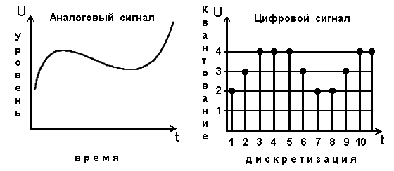
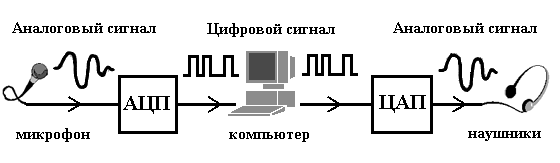

Звуковая волна – это по сути график некоторой функции от времени. Т.к. такая информация является непрерывной, требуется предварительное преобразование информации в дискретный вид. При этом преобразование непрерывного сигнала в цифровой всегда связано с потерей некоторой части информации.
Общий принцип преобразования аналогового сигнала (в том числе и звукового) в цифровой вид состоит в дискретизации по времени и квантованию по уровню.

Дискретизация по времени означает, что сигнал измеряется через строго определённые промежутки времени. Т.о. дискретизация – это замена непрерывного сигнала на последовательность отдельных значений. При этом всю область значений сигнала разбивают на несколько интервалов, которые называют уровнями или квантами. Значение сигнала заменяют номером интервала (кванта), в который это значение попало. Этот процесс называется квантование по уровню. Теперь вместо непрерывного сигнала получили последовательность целых чисел, которые записываются в двоичном виде. Такой файл с двоичными числами имеет расширение .wav (именно такой формат использует программа “Звукозапись” из Windows).
На рис. 2 схематично показан этот процесс. В данном случае, для примера, цифровой сигнал может принимать лишь четыре различных уровня. Из рисунка видно, что изменение цифрового сигнала возможно лишь в некоторые моменты времени (здесь этих моментов — одиннадцать). После такого преобразования непрерывный сигнал представляется последовательностью чисел. Показанный на рисунке 2 непрерывный сигнал заменяется числами: 2–3–4–4–4–3–2–2–3–4–4. Перечисленные десятичные числа на выходе устройства трансформации непрерывного сигнала в цифровой сигнал переводятся в двоичный вид:
0010–0010–0100–0100–0100–0011–0010–0010–0100–0100–0011.
В таком виде информация и будет храниться в файле с расширением .wav.
Количество уровней зависит от выделенной памяти. Первые звуковые карты выделяли для этого 8 разрядов (т.е. записать можно 28=256 уровней), что соответствовало качеству обычного средневолнового радиоприёмника. Затем использовали 16 разрядов, качество воспроизведения звука при этом было как при воспроизведении компакт-дисков. Теперь используют для кодирования очень чистого звука 18-ти и 24-х разрядный код.
Процесс цифровой записи и воспроизведения звука схематично изображен на рис. 3. Микрофон преобразует звуковой сигнал в колебания напряжения, а аналого-цифровой преобразователь (АЦП) через строго определенные интервалы времени замеряет амплитуду аналогового сигнала. По мере того, как преобразователь снимает показания, каждому интервалу ставится в соответствие 8-битное число — чем выше измеренное напряжение, тем больше число и наоборот. Частота таких измерений — несколько тысяч раз в секунду. Получившуюся цепочку 8-битных чисел записывают в память компьютера в виде файла с расширением wav. Обратная конверсия цифрового сигнала в непрерывный сигнал осуществляется с помощью цифроаналогового преобразователя (ЦАП).

На качество звука также оказывает сильное влияние частота дискретизации: чем чаще измеряется сигнал, тем точнее можно описать его форму. Для записи и воспроизведения человеческой речи используют частоту дискретизации 6-8 КГц (в секунду). Для оцифровки звукового сигнала от телевизора – 20-25 КГц. Для аудио CD – 44-48 КГц.
Размер файла с расширением .wav очень велик. К примеру, даже для записи голоса с невысоким качеством для 3-х минутного ролика на винчестере требуется 1Мб дискового пространства.